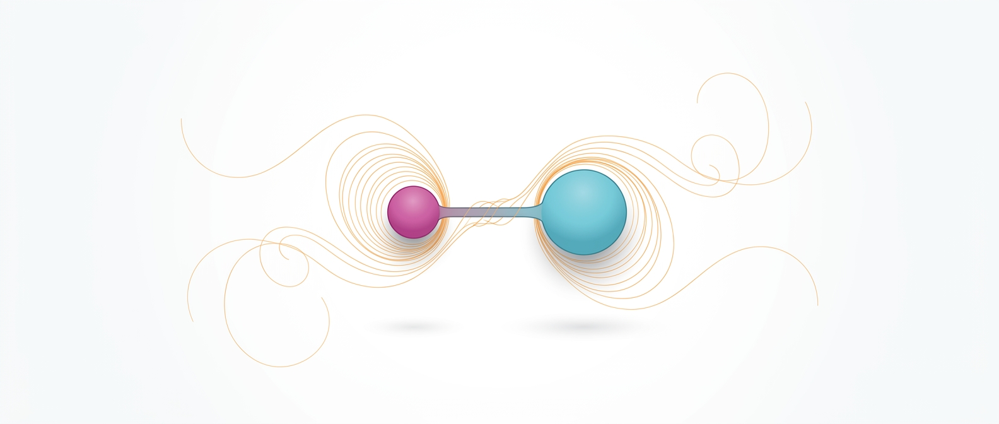
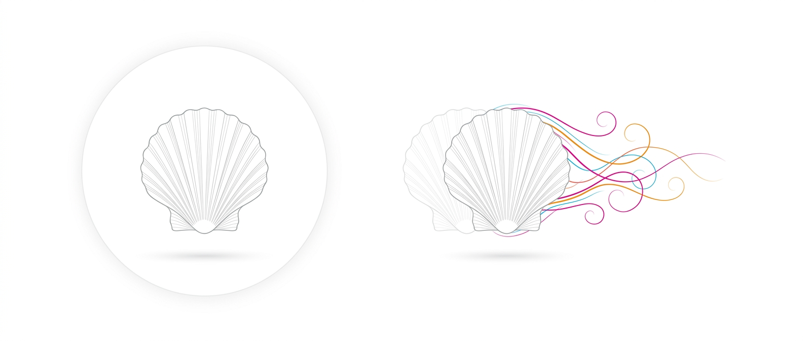
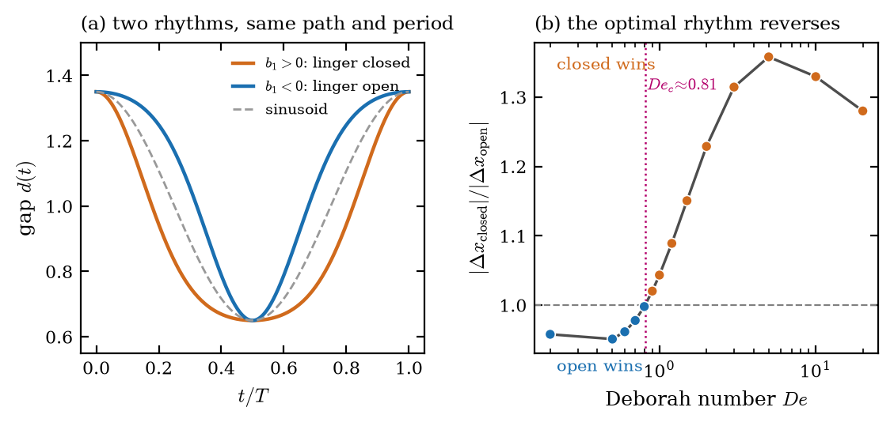
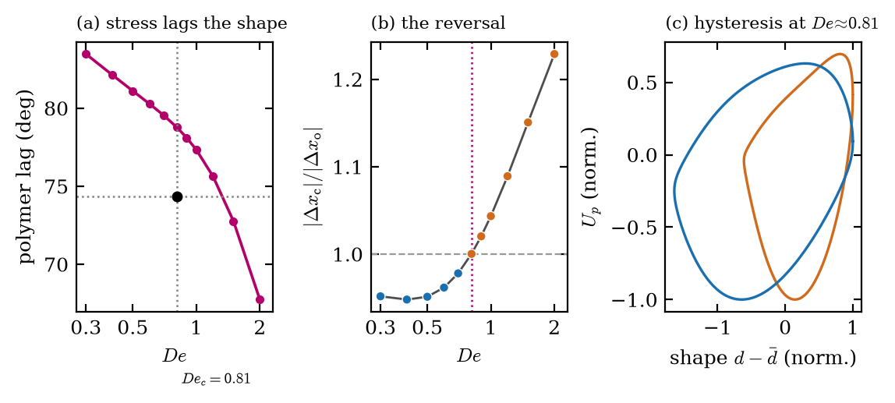
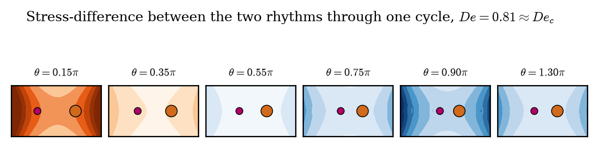
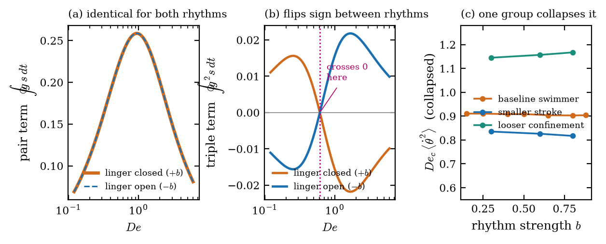
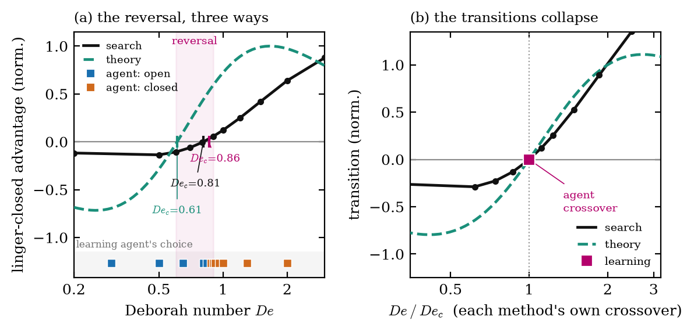
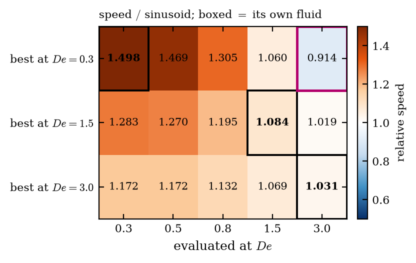
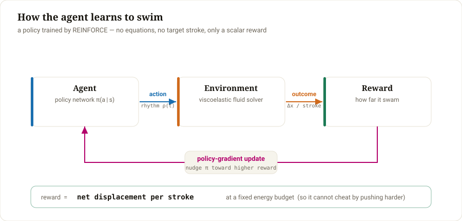
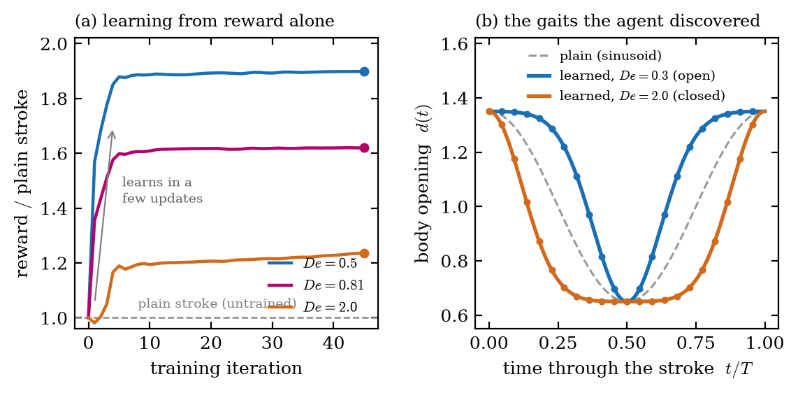

The best way to swim reverses with the fluid.
A microswimmer's optimal stroke rhythm was expected to shift as the surrounding fluid changed. Instead it flips into its exact opposite. The question was posed in 2012 and never run; we ran it, and settled it three independent ways.
We establish the result three independent ways:
The three methods share no assumptions, and they agree.

The swimmer: two unequal beads on a flexible rod, opening and closing in a fluid whose stretched molecules (gold) hold a fading memory of its motion. An artist's impression; the quantitative figures below are all generated from the simulation.
A swimmer with a single shape degree of freedom cannot self-propel in an ordinary fluid: its motion is time-reversible and its displacement per cycle is exactly zero (Purcell's scallop theorem). Fluid elasticity breaks the theorem, and such a swimmer moves. We ask a question posed but never executed by Montenegro-Johnson et al. (2012): in a fluid with memory, does the optimal timing of the stroke depend on the fluid? Holding the shape path, excursion and period fixed and varying only the rhythm, we find that rhythm alone changes swimming speed by 31.5%; that the optimal rhythm reverses at a critical Deborah number Dec ≈ 0.81; and that a stroke optimised for one fluid is slower than doing nothing in another. The effect is reached three independent ways — direct search, an analytic mechanism, and a reinforcement-learning agent — which agree on the result and on its limits.
Two theorems, forty years apart, set the stage for the question.
Imagine the simplest swimmer you can draw: a hinge with one degree of freedom, opening and closing. At the scale of a bacterium, water behaves like thick honey and momentum effectively vanishes — stop pushing and you stop instantly. In that world, opening and closing achieves nothing: the creature drifts forward as it closes and slides exactly back as it opens. Fast, slow, smooth or jerky, its net motion is exactly zero. Edward Purcell proved this in 1977; it is the scallop theorem.
Many real fluids are not so forgetful. Mucus, cytoplasm and biofilms are full of long molecules that stretch when pushed and take time to relax — the fluid remembers. That memory breaks Purcell's argument. Coming back is no longer the exact undoing of going out, and the scallop moves. This much has been understood since 2009.

The open question was subtler. Our swimmer has only one control — how far open it is — so the shape of its journey is fixed. The only freedom left is timing: when to hurry, when to dawdle. In an ordinary fluid, timing provably cannot matter. In a fluid that keeps track of when things happened, perhaps it does. In 2012 a group optimising a different microswimmer noticed exactly this gap:
"For viscoelastic properties, this may not be the optimum phase difference, due to the dependence of the fluid stress on its deformation history."
Montenegro-Johnson, Smith, Smith, Loghin & Blake · Eur. Phys. J. E 35, 111 (2012)Translated: in a fluid with memory, the best rhythm is probably different — someone should check. Nobody did, for fourteen years.
Same motion, same energy — only the timing differs. And which timing wins flips.
To ask the question cleanly we made cheating impossible. Every candidate stroke is forced to have the same opening range, the same energy, the same top speed and the same period. The only thing that varies is where in the cycle the swimmer lingers. Two such rhythms — one dawdling while closed, one while open — are mirror images with every measurable quantity identical.
They nonetheless swim at speeds differing by 31.5%. In an ordinary fluid the same comparison is identically zero. So rhythm matters, and it matters a lot. The central finding is what happens as the fluid's memory grows.

Below the critical point the swimmer should dawdle while open; above it, while closed. And the mis-tuning is punishing: a stroke optimised for a low-memory fluid scores 0.914 in a high-memory one — below one, meaning it is beaten by the plain, unoptimised stroke. Being highly optimised for the wrong fluid is an active handicap. Since a swimmer cannot directly sense the fluid's memory, this is a genuine control problem, not a one-shot calculation.
Both swimmers open and close by the same amount, spend the same energy and take the same time. The orange one dawdles while closed; the blue one dawdles while open. Everything else is identical.
Speeds are the measured simulation data, interpolated between the Deborah numbers actually run; the forward drift is magnified so a race that truly takes hours of stroking fits in seconds. The ratio between the two swimmers is exact.
A reversal must happen somewhere. What physically sets the critical point?
The pen-and-paper theory (below) proves the reversal exists and even predicts a crossover, but places it at De ≈ 0.61, while the full simulation says 0.81. The reduced theory captures the mechanism and misses the number by a quarter, because it discards the detailed stress field around the swimmer. To find what fixes the number, we measured the field.
Two things control it. First, the fluid's stored stress acts on the swimmer with a time lag, and the lag differs between the two rhythms — the linger-closed rhythm lags a little more, and the gap widens as memory grows. Each rhythm traces a different loop in the plot of push against shape; the enclosed area is how far it swims, and which loop wins flips at the critical point.

The second ingredient is where and when in the cycle the difference lives. Below is the difference in stored stress between the two rhythms, followed through one full stroke right at the critical point.

So this is what sets the critical point. One rhythm builds its advantage early in the stroke, the other late. The fluid's memory decides how long each advantage survives to actually push the swimmer. At the critical Deborah number the two exactly cancel over the cycle — below it the late (open) advantage wins, above it the early (closed) advantage wins. A definite physical balance, but one that lives in the full stress field — which is exactly why a scalar theory can only approximate it.
The mechanism can be derived on paper, with no simulation. In a fluid with memory the stress follows a delayed copy of the motion; expanding the swimmer's velocity, the displacement over one stroke splits into a pair term and a triple term. Because flipping the rhythm changes signs but not magnitudes of the stroke's harmonics (a Bessel-function identity), the pair term is mathematically identical for both rhythms and cannot reverse anything. The triple term flips sign exactly. The reversal is that sign change — which is also why an early memoryless toy model could never produce it.

A result reached one way is a claim. The same result reached three ways that share no machinery is a fact.
Solve the full fluid equations directly — thousands of strokes, refined on grid, timestep and domain — and locate the fastest at each fluid.
→ found the reversal, converged to 0.02%
Set the solver aside and derive the effect analytically. The pair term cannot reverse; the triple term flips sign. The reversal is that sign change.
→ explained why, no simulation
Give an agent only a reward and no equations. It learns opposite strategies on either side of the crossover — the reversal, rediscovered from experience.
→ flips at De ≈ 0.86 — see §5


The third road — reinforcement learning — is the one that reads like an organism, and it deserves its own look.
No equations, no target stroke. Just a goal — swim far — and the freedom to try.
This is the version that matches how a living swimmer actually faces the problem. It is not handed the answer; it has a body it can move, a single scalar reward for how far it got, and nothing else. It tries a rhythm, sees the reward, and adjusts. That is reinforcement learning — a policy (a small neural network) trained by policy gradient (REINFORCE). We never tell it what a good stroke looks like.

From that alone, it learns. The reward climbs off the plain stroke within a handful of updates, and the rhythms it settles on are exactly the open and closed gaits the other two methods identified — discovered here from experience, not derived.

The learning route closes the loop this project opened with. In an ordinary fluid the problem is empty: the scallop theorem leaves no trace of the past, so nothing the agent tries carries any consequence forward and every strategy scores exactly zero — there is nothing to learn. Only in a fluid with memory does the past shape the future. Memory is precisely what turns an unlearnable problem into a learnable one.
The single most important choice in this experiment is how the reward is defined, and getting it right is what made the agent discover the reversal. A naïve "go as far as you can" reward does not work: the agent simply spends more energy and lingers closed at every fluid, never reversing. That is not a flaw in the physics — it is the reward inviting the agent to push harder instead of swim smarter.
The fix — and the finding. We hold the reward to a fixed energy budget: net displacement per stroke at equal effort, the physically correct statement of "swim efficiently." With the budget in place, the reversal appears on its own. The agent, trained separately at each fluid, learns opposite rhythms — lingering open in a low-memory fluid, closed in a high-memory one — and flips at De ≈ 0.86, right alongside the 0.81 found by search and by theory. Adding the energy budget to the reward is what turns "swim far" into "swim well," and it is what lets a learning agent recover the reversal from experience alone.
Everything here is generated from the simulation data; nothing is drawn by hand.
The full write-up is a seven-page fluid-mechanics letter: formulation, results, the analytic mechanism, and every limit stated plainly. The solver is about three hundred lines of NumPy with no commercial fluid-dynamics package; every figure traces to a result file.
# from scratch, NumPy only for the solver python3 crossover_modal.py # locate the reversal python3 mechanism_deep_modal.py # the phase-lag mechanism + contours python3 theory_analysis.py # the analytic backbone, ~1 second python3 rl_modal.py # the agent that learns it from reward
@misc{vizuara2026rhythm,
title = {The optimal stroke rhythm of a reciprocal microswimmer
reverses with fluid memory},
author = {Vizuara Research},
year = {2026},
note = {Preprint},
url = {https://github.com/RajatDandekar/swimmer-rhythm}
}